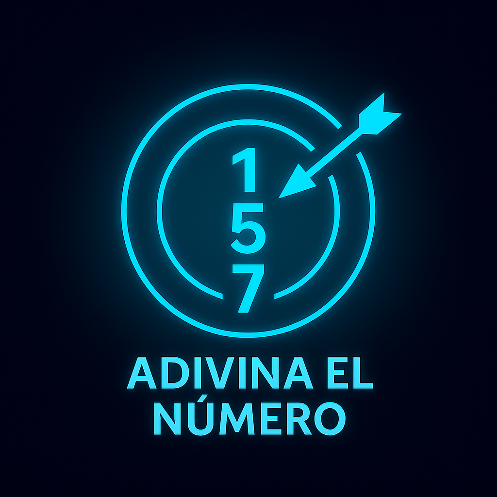

Adivina El Número
Adivina El Número
Bienvenido a Adivina El Número — modos desde Fácil hasta Dioses; juega con voz, recibe sugerencias automáticas, guarda récords y comparte tus mejores marcas. ¿Listo para el desafío?
Área del juego
Selecciona modo y presiona Iniciar.